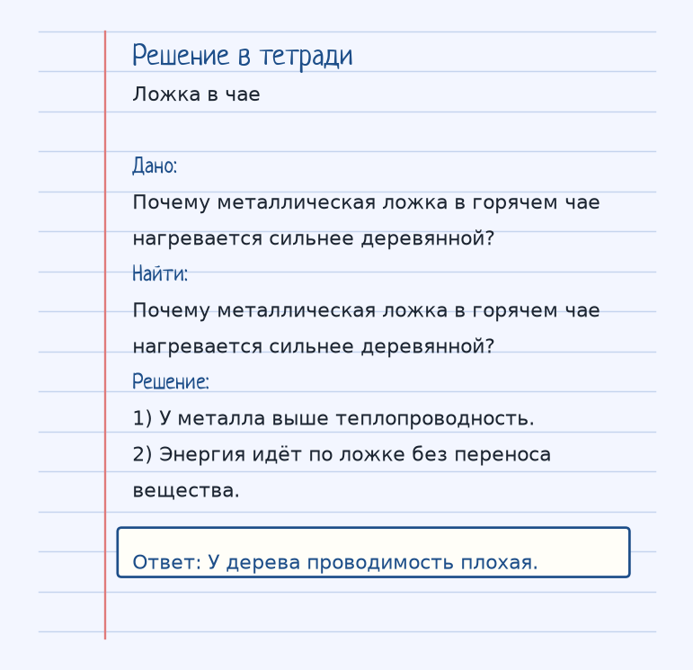
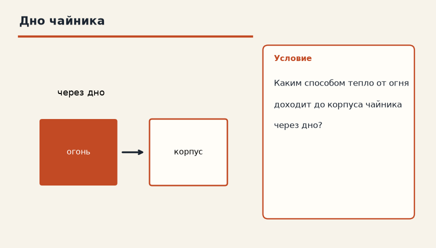
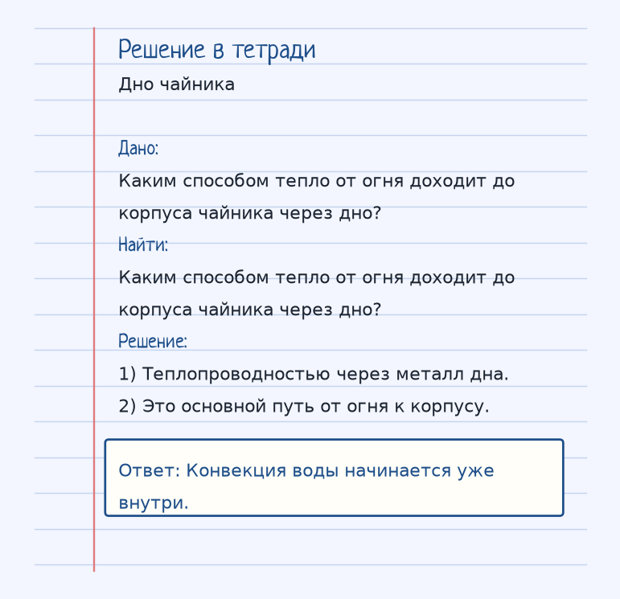

Тема «Теплопроводность»: физический смысл, единицы величин, типичные ошибки и два разобранных примера.
Схема к условию.
Физический смысл
Передача энергии от более нагретых частей тела к менее нагретым за счет движения молекул (без переноса вещества).
Теплопроводность переносит энергию от горячего участка к холодному через само вещество, без потоков и без переезда кусков материала. Молекулы в горячем месте колеблются сильнее и расталкивают соседей. Так нагревается металлическая ложка, оставленная в чае.
У разных материалов способность разная. Металл проводит хорошо, дерево плохо — поэтому деревянная ложка в том же чае почти не обжигает руку. Вакуум теплопроводностью не греет: передавать удары некому, для вакуума остаётся излучение.
Чайник на плите получает жар от огня к корпусу прежде всего теплопроводностью через дно. Дальше вода внутри уже может перемешиваться, но путь «огонь → металл дна» — проводимость.
Формула и единицы
Перенос энергии без переноса вещества, от горячего к холодному, за счёт движения молекул.
Пояснение
Металлическая ложка в горячем чае нагревается. А деревянная — нет (у нее теплопроводность плохая).
Металлическая ложка в горячем чае нагревается. Деревянная почти нет: у дерева теплопроводность плохая.
Типичные ошибки
Не называй теплопроводностью подъём тёплого воздуха. Это уже конвекция. Проводимость идёт и в твёрдом теле, где потоков нет.
Разобранные примеры. Решение каждого открывается отдельно.
Разбор 1
Ложка в чае
Почему металлическая ложка в горячем чае нагревается сильнее деревянной?
На схеме только условие.
Порядок записи: данные, единицы СИ, искомая величина, ход решения, ответ.
Дано. Почему металлическая ложка в горячем чае нагревается сильнее деревянной?
В СИ.
Найти. Почему металлическая ложка в горячем чае нагревается сильнее деревянной?
Решение.
У металла выше теплопроводность.
Энергия идёт по ложке без переноса вещества.
У дерева проводимость плохая.

Разбор 2
Дно чайника
Каким способом тепло от огня доходит до корпуса чайника через дно?

На схеме только условие.
Порядок записи: данные, единицы СИ, искомая величина, ход решения, ответ.
Дано. Каким способом тепло от огня доходит до корпуса чайника через дно?
В СИ.
Найти. Каким способом тепло от огня доходит до корпуса чайника через дно?
Решение.
Теплопроводностью через металл дна.
Это основной путь от огня к корпусу.
Конвекция воды начинается уже внутри.

Разбор 3
Медь и дерево
Почему медная ложка в горячем чае нагревается быстрее деревянной?
На схеме только условие.
Порядок записи: данные, единицы СИ, искомая величина, ход решения, ответ.
Дано. Оба предмета в одном чае
В СИ.
Числового перевода нет.
Найти. Причина
Решение.
У меди выше теплопроводность, энергия передаётся без переноса вещества.
Теплопроводность меди выше.
Разбор 4
Направление
В какую сторону идёт энергия при теплопроводности?
На схеме только условие.
Порядок записи: данные, единицы СИ, искомая величина, ход решения, ответ.
Дано. Есть разность температур
В СИ.
Числового перевода нет.
Найти. Направление
Решение.
Энергия передаётся от более нагретого тела к менее нагретому.
От горячего к холодному.
Разбор 5
Вакуум
Почему вакуум между стенками термоса ослабляет теплопроводность?
На схеме только условие.
Порядок записи: данные, единицы СИ, искомая величина, ход решения, ответ.
Дано. Между стенками разреженный газ
В СИ.
Числового перевода нет.
Найти. Причина
Решение.
Почти нет частиц, которые передавали бы колебания.
Некому передавать энергию столкновениями.
Разбор 6
Твёрдое тело
Идёт ли конвекция внутри сплошной металлической ложки?
На схеме только условие.
Порядок записи: данные, единицы СИ, искомая величина, ход решения, ответ.
Дано. Ложка твёрдая
В СИ.
Числового перевода нет.
Найти. Ответ
Решение.
В твёрдом теле потоков вещества нет. Нагрев ложки — теплопроводность.
Нет, это теплопроводность.
Разбор 7
Дно чайника
Каким способом тепло от пламени доходит до воды через дно металлического чайника?
На схеме только условие.
Порядок записи: данные, единицы СИ, искомая величина, ход решения, ответ.